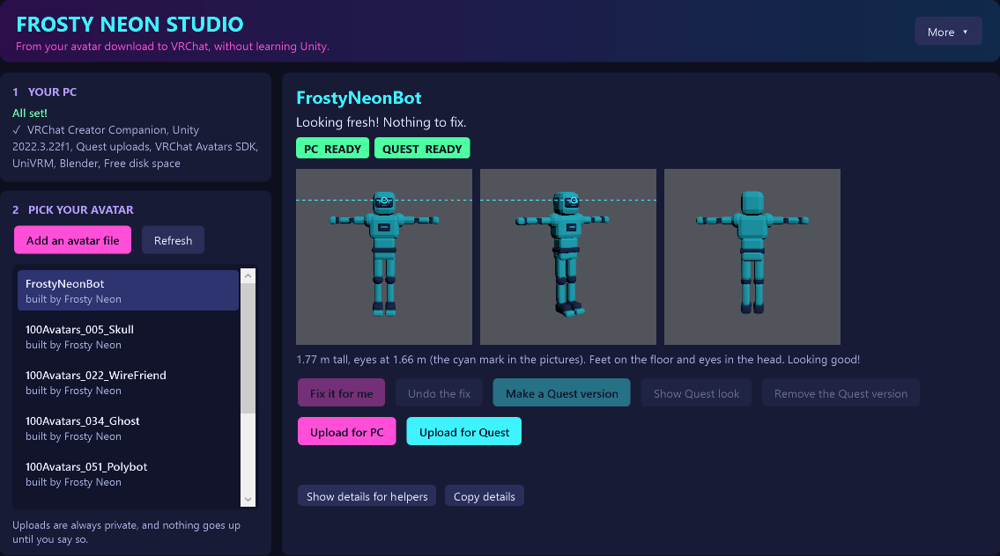
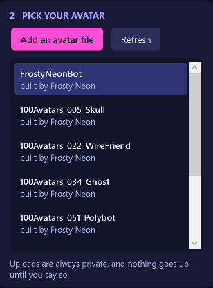
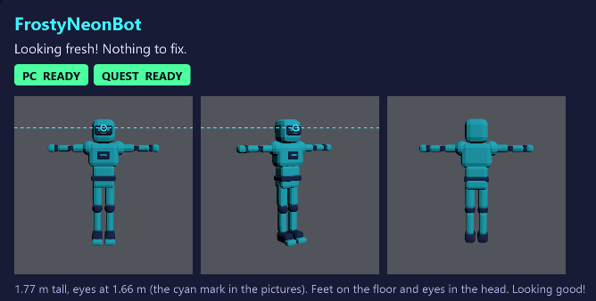
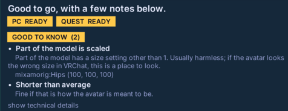
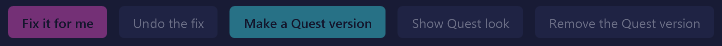
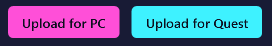

Your avatar into VRChat, without learning Unity.
Drop in the avatar you bought on Booth, made in VRoid Studio or got as a model. Frosty Neon Studio checks it with VRChat's own rules, tells you in plain words what it found, fixes what it safely can, makes a Quest version and uploads it to your account, privately.

- Your PC. What's installed, and what to install next, in order.
- Your avatars. Drop a file anywhere on the window, or add one here.
- The verdict, in plain words, with PC and Quest checked separately.
- Front, side and back. The dashed line is where your eyes will be.
- Fix it for me and Make a Quest version light up only when needed.
- Upload to your own account. Always private.
How it works
Four steps, in one window
-
Drop the file
A Booth package, a VRoid export or a plain model. Drag it anywhere on the window, or click Add an avatar file.
.unitypackage.vrm.fbx
A package with scripts lists them and asks before importing. A VRoid file shows its creator's terms first.

-
It checks, the way VRChat does
The VRChat SDK's own validation runs in the background. Each finding says what it means for you in VRChat and whether you need to do anything. PC and Quest are separate checks: passing one isn't proof of the other.


Findings for another avatar, in the Unity Avatar Guide window, which shows the same check. -
Fix it, and make a Quest version
Fix it for me changes only the Unity import settings VRChat's upload needs. Your avatar's own files are not edited, and Undo the fix puts the settings back.
Make a Quest version builds a separate copy with Quest materials and smaller textures. Your PC avatar stays as it is. Show Quest look shows the Quest pictures before you upload.

Dimmed here: this avatar needed neither. -
Upload, privately
The app asks first. Unity opens only for VRChat's sign-in and the final Upload button, and the avatar goes to your account as private. Then in VRChat: Avatars > Uploaded, and put it on.

Before you start
Set up once
Unity has to be installed because VRChat uploads need it. You don't have to learn it: Creator Companion installs it, and the app runs it in the background.
- Install VRChat Creator Companion. VRChat's free installer for Unity 2022.3.22f1 and the VRChat SDK. For Quest, also add Android Build Support in Unity Hub.
- Download Frosty Neon Studio and unzip it to a short path, such as
C:\FrostyNeon. - Add its Unity project to Creator Companion (Projects > Add Existing Project), open it once in Unity, then close Unity.
- Double-click
Frosty Neon Studio.cmd. It checks your PC and says what's missing, if anything.
Safety
Nothing happens behind your back
- Nothing is uploaded until you confirm it in VRChat's upload box, and uploads are always private.
- Your avatar's own files are never edited. Changes go into Unity import settings and new files beside them, and can be undone or removed.
- Packages with scripts are not imported without asking, and you see which scripts they are.
- A VRoid creator's terms are shown before the avatar is set up, and again before upload when they limit who may use it.
- It installs nothing by itself. It tells you what to install and where to get it.
Known limits
What it can't promise yet
This is a beta. If something looks wrong, a report helps the next person.
- Tested on the included FrostyNeonBot, free test avatars, VRoid Studio exports and generated models. Not yet on many Booth avatars.
- Quest versions use VRChat's mobile shaders, so see-through and cut-out parts can look different from PC. They have been uploaded, but not yet widely checked on a headset.
- VRoid files must be exported as VRM 0.0. VRM 1.0 isn't supported yet.
- Its checks repeat some of the VRChat SDK's build checks. The SDK's own build is the final word.
- Windows only.
Questions
FAQ
Is it free?
Yes. The code is open source under the MIT licence. The starter robot, FrostyNeonBot, is CC BY 4.0: use it, change it, upload your own version, and credit "FrostyNeonBot by NeonEchoDude".
Do I still need Unity?
It has to be installed, because VRChat uploads go through it. Creator Companion installs it for you, and Frosty Neon Studio runs it in the background. You only see it for VRChat's sign-in and the upload confirmation.
Does it work for Quest?
It checks Quest separately and can make a Quest version with Quest materials and smaller textures. Some see-through or cut-out parts look different on Quest; Show Quest look shows you before you upload.
Can I upload any avatar I bought?
Check the creator's terms. Many Booth avatars allow uploading for your own use. VRoid files carry their terms inside, and the app shows them. Only upload avatars that are yours or that you have permission to use.
Will other people see my avatar?
Uploads are private: other players see it when you wear it, but it isn't listed for anyone else to pick.
Is this made by VRChat?
No. It's a fan-made tool, not made, endorsed or supported by VRChat Inc.
Something went wrong. Where do I get help?
Ask in the Discord. Report a problem on GitHub. Click Copy details in the app and paste them: they have what a helper needs.